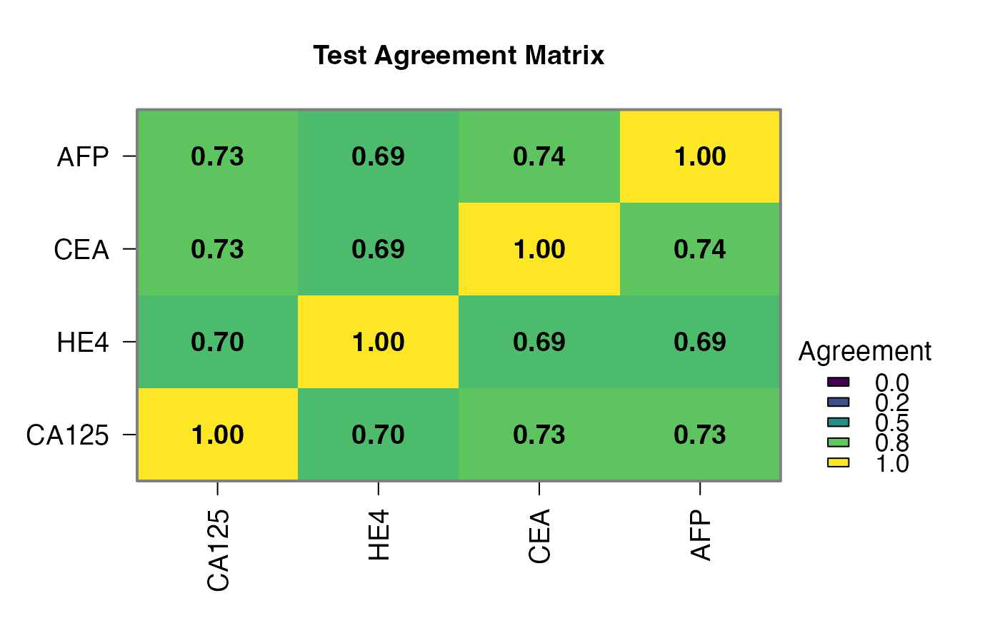
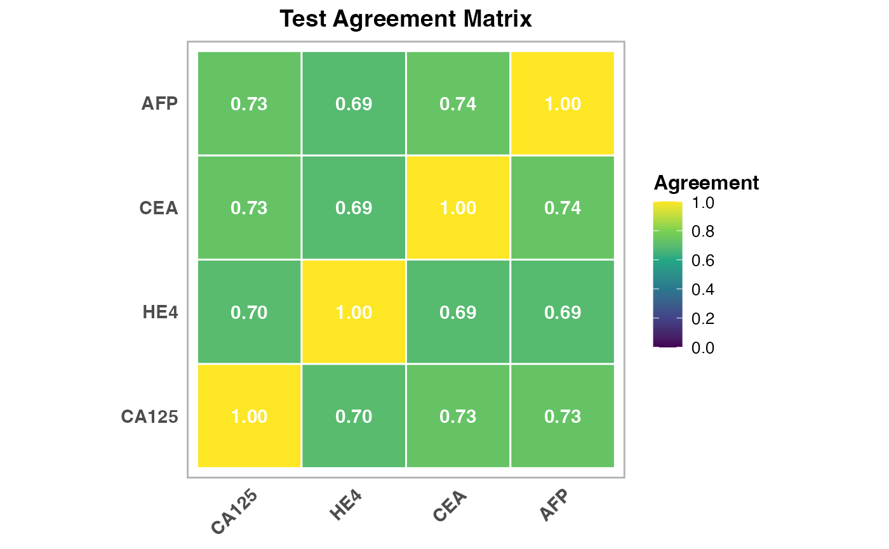

nogoldstandard Tumor Marker Data - Four-Marker Panel
Source:R/data_nogoldstandard_docs.R
nogoldstandard_tumormarker.RdFour tumor marker dataset with 220 patients for evaluating marker panel performance without gold standard. Markers: CA125, HE4, CEA, AFP with varying sensitivity (0.75-0.68) and specificity (0.88-0.85).
Format
A data frame with 220 rows and 7 variables:
- patient_id
Character: Patient identifier (PT001-PT220)
- CA125
Factor: CA125 level ("Normal", "Elevated"), Sens=0.75, Spec=0.88
- HE4
Factor: HE4 level ("Normal", "Elevated"), Sens=0.70, Spec=0.85
- CEA
Factor: CEA level ("Normal", "Elevated"), Sens=0.68, Spec=0.90
- AFP
Factor: AFP level ("Normal", "Elevated"), Sens=0.72, Spec=0.87
- age
Numeric: Patient age in years (mean 62, SD 10)
- risk_category
Factor: Risk level (Low, Moderate, High)
Details
Simulated with 20% cancer prevalence (screening context). Multiple markers enable composite reference and latent class analysis comparisons.
Examples
data(nogoldstandard_tumormarker)
nogoldstandard(data = nogoldstandard_tumormarker,
test1 = "CA125", test1Positive = "Elevated",
test2 = "HE4", test2Positive = "Elevated",
test3 = "CEA", test3Positive = "Elevated",
test4 = "AFP", test4Positive = "Elevated",
test5Positive = "",
clinicalPreset = "tumor_markers")
#>
#> ANALYSIS WITHOUT GOLD STANDARD
#> WARNING: Clinical preset: tumor markers
#> Specialized for tumor marker validation studies Use when validating cancer biomarkers or prognostic tests This preset does NOT change your settings automatically -- set them yourself in the options panel: Bootstrap confidence intervals: currently off, recommended on.
#>
#> Analysing 220 cases
#> All 220 cases have a result for every selected test.
#> Agreement Statistics (Cohen's Kappa)
#> ───────────────────────────────────────────────────────
#> Test Pair Kappa p-value Agreement
#> ───────────────────────────────────────────────────────
#> CA125 vs HE4 0.2513206 0.0009848 69.54545
#> CA125 vs CEA 0.3145332 0.0000379 73.18182
#> CA125 vs AFP 0.3407152 0.0000035 73.18182
#> HE4 vs CEA 0.2052699 0.0103947 69.09091
#> HE4 vs AFP 0.2364230 0.0021283 69.09091
#> CEA vs AFP 0.3221419 0.0000247 73.63636
#> ───────────────────────────────────────────────────────
#> Note. Kappa standard errors and p-values use a
#> large-sample normal approximation rather than the
#> exact asymptotic SE (e.g. vcd::Kappa); interpret
#> p-values cautiously, especially in small samples.
#>
#>
#> <div class='clinical-summary' style='background: #f0f8ff; padding:
#> 15px; border-radius: 8px; margin: 10px 0;'><h4 style='color: #1565c0;
#> margin-top: 0;'> Clinical Summary
#>
#> Analysis: No gold standard analysis using latent_class method
#>
#> Tests analyzed: CA125, HE4, CEA, AFP (N=4)
#>
#> Disease prevalence: 22.4%
#>
#> Test sensitivities: Range from 63.1% to 78.3%
#>
#> Clinical interpretation: Moderate prevalence setting - balanced
#> diagnostic performance
#>
#> <div style='background: #f8f9fa; padding: 20px; border-radius: 8px;
#> margin: 15px 0; border-left: 4px solid #007bff;'><h3 style='color:
#> #007bff; margin-top: 0;'> Method Selection Guide
#>
#> <div style='margin: 15px 0; padding: 15px; background: #e8f5e8;
#> border-radius: 5px;'><h4 style='color: #2e7d32; margin-top: 0;'>
#> Latent Class Analysis (Recommended)
#>
#> Description: Most robust method using mixture models. Estimates
#> disease prevalence and test parameters simultaneously.
#>
#> Best for: Diagnostic validation studies with 3+ tests and N>=100
#>
#> Strengths: The only method here that estimates accuracy rather than
#> agreement with a self-built reference; provides model fit statistics.
#> Assumes the tests are conditionally independent given true status --
#> it does NOT model conditional dependence
#>
#> <div style='margin: 15px 0; padding: 15px; background: #e3f2fd;
#> border-radius: 5px;'><h4 style='color: #1565c0; margin-top: 0;'>
#> Bayesian Analysis
#>
#> Description: Incorporates prior knowledge about test performance using
#> Bayesian methods.
#>
#> Best for: Studies where you have prior information about expected
#> sensitivity/specificity
#>
#> Strengths: Uses prior knowledge, handles uncertainty well, good for
#> smaller samples
#>
#> <div style='margin: 15px 0; padding: 15px; background: #fff3e0;
#> border-radius: 5px;'><h4 style='color: #ef6c00; margin-top: 0;'>
#> Composite Reference
#>
#> Description: Uses majority vote of available tests as pseudo-gold
#> standard.
#>
#> Best for: Inter-rater agreement studies with 3+ tests, exploratory
#> analysis
#>
#> Strengths: Simple and intuitive. Not an accuracy estimate: each test
#> helps build the standard it is judged against, which inflates its
#> apparent performance. Needs 3+ tests -- with 2 a tie counts as
#> diseased, making it identical to Any Test Positive
#>
#> <div style='margin: 15px 0; padding: 15px; background: #fce4ec;
#> border-radius: 5px;'><h4 style='color: #c2185b; margin-top: 0;'> All
#> Tests Positive
#>
#> Description: Conservative approach - disease present only if ALL tests
#> are positive.
#>
#> Best for: Highly specific diagnoses where false positives are very
#> costly
#>
#> Strengths: A deliberately strict reference. Sensitivity and NPV cannot
#> be estimated under this rule -- they are fixed at 100% by construction
#> -- so only specificity and PPV are shown, and both are inflated by the
#> same circularity
#>
#> <div style='margin: 15px 0; padding: 15px; background: #e8f5e8;
#> border-radius: 5px;'><h4 style='color: #388e3c; margin-top: 0;'> Any
#> Test Positive
#>
#> Description: Liberal approach - disease present if ANY test is
#> positive.
#>
#> Best for: Population screening scenarios where missing cases is costly
#>
#> Strengths: A deliberately permissive reference. Specificity and PPV
#> cannot be estimated under this rule -- they are fixed at 100% by
#> construction -- so only sensitivity and NPV are shown, and both are
#> inflated by the same circularity
#>
#> <div style='margin: 15px 0; padding: 10px; background: #fff8e1;
#> border-radius: 5px; border-left: 3px solid #ffb300;'><h4 style='color:
#> #e65100; margin-top: 0;'> Selection Tips
#>
#> Start with Latent Class Analysis for most diagnostic studiesUse
#> Composite Reference for quick exploratory analysisChoose All/Any Tests
#> Positive based on clinical consequences of errorsConsider Bayesian if
#> you have strong prior information
#>
#> Disease Prevalence
#> ───────────────────────────────────────
#> Estimate Lower CI Upper CI
#> ───────────────────────────────────────
#> 22.42637 16.91482 27.93791
#> ───────────────────────────────────────
#>
#>
#> Test Performance Metrics
#> ─────────────────────────────────────────────────────────────────────────────────────────────────────────────────────
#> Test Sensitivity Lower CI Upper CI Specificity Lower CI Upper CI PPV NPV
#> ─────────────────────────────────────────────────────────────────────────────────────────────────────────────────────
#> CA125 78.30606 66.80537 89.80676 85.72304 80.47440 90.97167 61.32484 93.18258
#> HE4 63.06144 49.59418 76.52870 81.90180 76.12558 87.67803 50.18267 88.46535
#> CEA 68.67277 55.73050 81.61504 88.21165 83.37362 93.04969 62.74403 90.68902
#> AFP 77.50376 65.85248 89.15504 86.07704 80.88320 91.27089 61.67549 92.97519
#> ─────────────────────────────────────────────────────────────────────────────────────────────────────────────────────
#> Note. 95% intervals are normal-approximation (Wald) intervals, using the estimated number of diseased cases as
#> the denominator for sensitivity and non-diseased for specificity. They treat the estimates as observed
#> proportions and so understate the uncertainty of a latent-variable model; enable Bootstrap for intervals that
#> account for the estimation itself.
#>
#>
#> Model Fit Statistics
#> ─────────────────────────────────────
#> Statistic Value
#> ─────────────────────────────────────
#> BIC 1000.145895
#> AIC 969.603247
#> Log-Likelihood -475.801624
#> G-squared 2.860211
#> Chi-squared 2.685605
#> Degrees of Freedom 6.000000
#> ─────────────────────────────────────
#>
#>
#> Conditional Independence Check (Bivariate Residuals)
#> ──────────────────────────────────────────────────────────────────────
#> Test Pair Bivariate Residual Interpretation
#> ──────────────────────────────────────────────────────────────────────
#> CA125 vs HE4 0.005259860 Consistent with independence
#> CA125 vs CEA 0.018283695 Consistent with independence
#> CA125 vs AFP 0.011987178 Consistent with independence
#> HE4 vs CEA 0.110814148 Consistent with independence
#> HE4 vs AFP 0.017676569 Consistent with independence
#> CEA vs AFP 4.144993e-4 Consistent with independence
#> ──────────────────────────────────────────────────────────────────────
#> Note. A residual above 3.84 (the 5% point of chi-squared on 1
#> degree of freedom) is evidence that the pair does not err
#> independently. This is a descriptive check, not a formal test:
#> the residuals are correlated with one another and no
#> multiplicity adjustment is applied.
#>
#>
#> Test Cross-Tabulation
#> ───────────────────────────────────────────────────
#> Test Combination Count Percentage
#> ───────────────────────────────────────────────────
#> CA125-, HE4-, CEA-, AFP- 90 40.90909
#> CA125-, HE4+, CEA-, AFP- 21 9.54545
#> CA125+, HE4-, CEA-, AFP- 16 7.27273
#> CA125-, HE4-, CEA-, AFP+ 16 7.27273
#> CA125-, HE4-, CEA+, AFP- 15 6.81818
#> CA125+, HE4+, CEA+, AFP+ 12 5.45455
#> CA125+, HE4-, CEA+, AFP+ 9 4.09091
#> CA125+, HE4+, CEA-, AFP- 6 2.72727
#> CA125+, HE4-, CEA-, AFP+ 6 2.72727
#> CA125+, HE4+, CEA-, AFP+ 6 2.72727
#> CA125+, HE4+, CEA+, AFP- 5 2.27273
#> CA125-, HE4+, CEA-, AFP+ 5 2.27273
#> CA125-, HE4+, CEA+, AFP+ 5 2.27273
#> CA125+, HE4-, CEA+, AFP- 3 1.36364
#> CA125-, HE4-, CEA+, AFP+ 3 1.36364
#> CA125-, HE4+, CEA+, AFP- 2 0.90909
#> ───────────────────────────────────────────────────
#>

